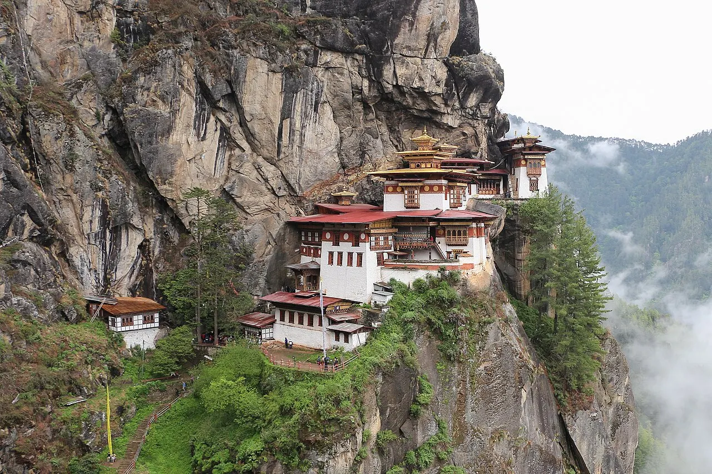

Places covered
Phuentsholing → Thimphu → Punakha → Phobjikha → Bumthang → Paro
Your day-by-day journey
Suggested itinerary. Attractions, travel times and arrangements are subject to your written quote and local conditions.
Day 1
Arrival in Phuentsholing. Meet the local representative (if arranged), transfer to the hotel and check in. Depending on arrival time, visit Zangto Pelri Lhakhang and town orientation; immigration formalities. Overnight in Phuentsholing.
Day 2
Visit Zangto Pelri Lhakhang and town orientation; immigration formalities. Explore nearby streets and local food or craft markets if time permits. Overnight in Phuentsholing.
Day 3
Visit Zangto Pelri Lhakhang and town orientation; immigration formalities; allow time for local photography and independent exploration. Continue sightseeing in Phuentsholing at a relaxed pace, with stops for meals. Overnight in Phuentsholing.
Day 4
Travel from Phuentsholing to Thimphu (journey time to be confirmed). After arrival, Visit Buddha Dordenma and National Memorial Chorten. Explore nearby streets and local food or craft markets if time permits. Overnight in Thimphu.
Day 5
Travel from Thimphu to Punakha (journey time to be confirmed). After arrival, Visit Punakha Dzong and Pho Chhu–Mo Chhu river confluence. Explore nearby streets and local food or craft markets if time permits. Overnight in Punakha.
Day 6
Visit Chimi Lhakhang and Dochula Pass viewpoint. Continue sightseeing in Punakha at a relaxed pace, with stops for meals. Overnight in Punakha.
Day 7
Travel from Punakha to Phobjikha (journey time to be confirmed). After arrival, Visit Gangtey Monastery and Phobjikha valley nature trail. Explore nearby streets and local food or craft markets if time permits. Overnight in Phobjikha.
Day 8
Travel from Phobjikha to Bumthang (journey time to be confirmed). After arrival, Visit Jakar Dzong and Jambay Lhakhang. Explore nearby streets and local food or craft markets if time permits. Overnight in Bumthang.
Day 9
Visit Kurjey Lhakhang and Bumthang valley heritage sites. Continue sightseeing in Bumthang at a relaxed pace, with stops for meals. Overnight in Bumthang.
Day 10
Travel from Bumthang to Paro (journey time to be confirmed). After arrival, Visit Rinpung Dzong and National Museum (opening permitting). Explore nearby streets and local food or craft markets if time permits. Overnight in Paro.
Day 11
After breakfast, check out from Paro and transfer to the agreed departure point. Plan sufficient time for road conditions, security checks and onward travel.
Before you travel
Accommodation, meals, transport, tickets, permits, inclusions and exclusions are confirmed only in your written quotation. Share accessibility needs, children's ages and your preferred pace when enquiring. Activities depend on weather, local access and availability.
Frequently asked questions
Can this itinerary be customised?
Yes. Modi Holidays can tailor the route, hotel category, pace and sightseeing to your travel dates and preferences.
Are hotels and departure dates confirmed?
No. Hotel names, transport, inclusions and dates are proposed until confirmed in writing after your enquiry.